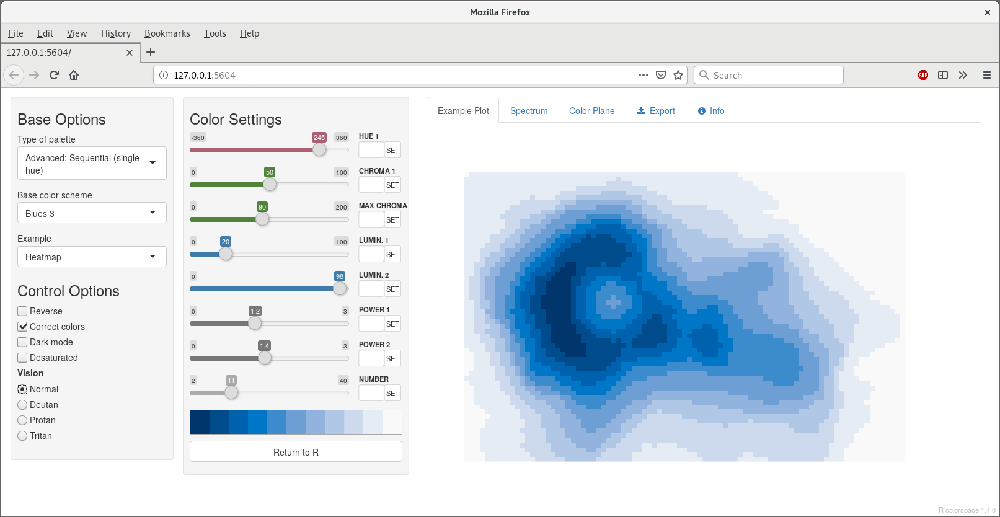
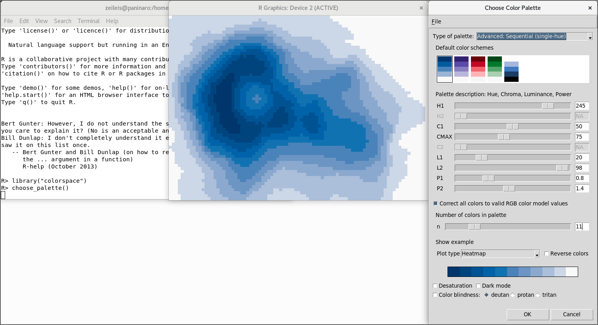
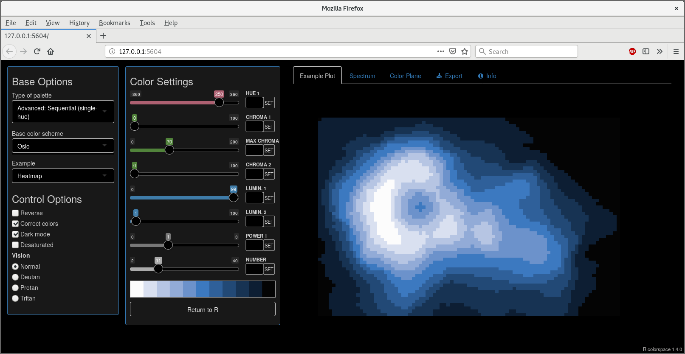
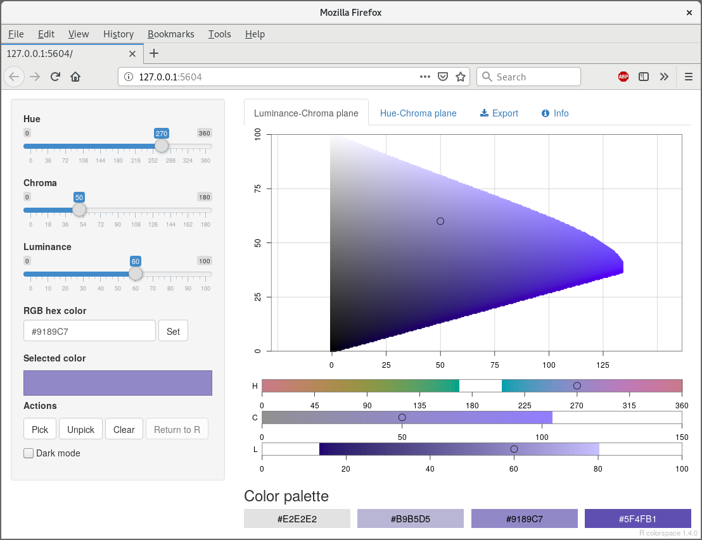
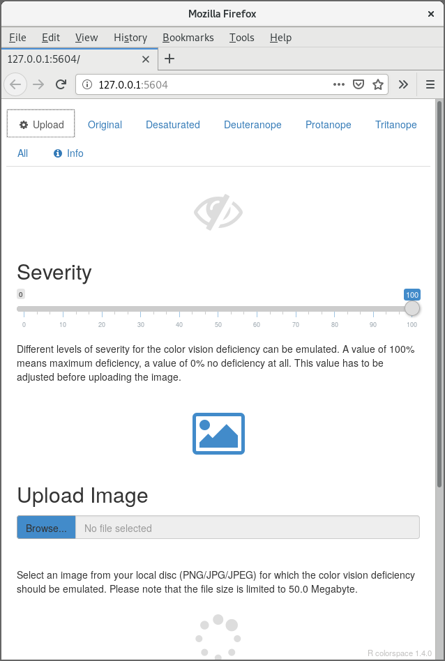
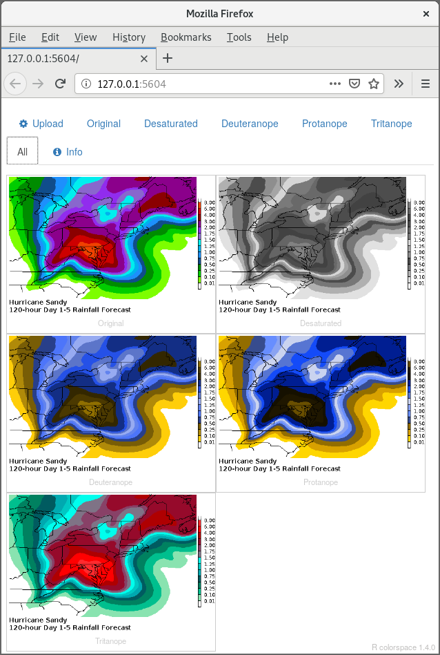

hclwizard.RmdTo facilitate exploring the package and employing it when working with colors, several graphical user interfaces (GUIs) are provided within the package as shiny apps (Chang et al. 2020). All of these GUIs/apps can be run locally from within R and are also provided at http://hclwizard.org/.
choose_palette() or hclwizard() or hcl_wizard().choose_color() or equivalently hcl_color_picker().cvd_emulator().In addition to the shiny version, the palette constructor app is also available as a Tcl/Tk GUI via the R package tcltk shipped with base R (R Core Team 2019). The tcltk version can only be run locally and is considerably faster while the shiny version has a nicer interface with more features and can be run online. The choose_palette() function by default starts the tcltk version while hclwizard()/hcl_wizard() by default start the shiny version.
The palette constructor GUI can either be started with hclwizard() (or equivalently hcl_wizard()) which by default starts the shiny version:

The tcltk version is started by default with choose_palette():

However, all defaults can be modified by setting gui = "tcltk" or gui = "shiny".
The GUIs interface the palette functions qualitative_hcl() for qualitative palettes, sequential_hcl() for sequential palettes with single or multiple hues, and diverging_hcl() for diverging palettes (composed from two single-hue sequential palettes). See the discussion of HCL-based color palettes for more details.
The GUIs allow for interactive modification of the arguments of the respective palette-generating functions, i.e., starting/ending hue (wavelength, type of color), minimal/maximal chroma (colorfulness), minimal/maximal luminance (brightness, amount of gray), and power transformations that control how quickly/slowly chroma and/or luminance are changed through the palette. Subsets of the parameters may not be applicable depending on the type of palette chosen. See qualitative_hcl() and Zeileis, Hornik, and Murrell (2009) for a more detailed explanation of the different arguments. Stauffer et al. (2015) provide more examples and guidance.
Optionally, the active palette can be illustrated by using a range of examples such as a map, heatmap, scatter plot, perspective 3D surface etc. To demonstrate different types of deficiencies, the active palette may be desaturated (emulating printing on a grayscale printer) and collapsed to emulate different types of color-blindness (without red-green or green-blue contrasts) using the simulate_cvd() functions. To facilitate generation of palettes for black/dark backgrounds, a “dark mode” of the GUIs is also available:

This GUI can be started with either choose_color() or equivalently hcl_color_picker().

It shows the HCL color space either as a hue-chroma plane for a given luminance value or as a luminance-chroma plane for a given hue. Colors can be entered by:
By repeating the selection a palette of colors can be constructed and returned within R for subsequent usage in visualizations.
This GUI can be started with cvd_emulator().

The GUI supports uploading a raster image in JPG or PNG format which is then checked for various kinds of color vision deficiencies at the selected severity. By default the severity is set to 100% and all supported kinds of color vision deficiency are checked for, i.e.,
Chang, Winston, Joe Cheng, J. J. Allaire, Yihui Xie, and Jonathan McPherson. 2020. Shiny: Web Application Framework for R. https://CRAN.R-project.org/package=shiny.
R Core Team. 2019. R: A Language and Environment for Statistical Computing. Vienna, Austria: R Foundation for Statistical Computing. https://www.R-project.org/.
Stauffer, Reto, Georg J. Mayr, Markus Dabernig, and Achim Zeileis. 2015. “Somewhere over the Rainbow: How to Make Effective Use of Colors in Meteorological Visualizations.” Bulletin of the American Meteorological Society 96 (2): 203–16. https://doi.org/10.1175/BAMS-D-13-00155.1.
Zeileis, Achim, Kurt Hornik, and Paul Murrell. 2009. “Escaping RGBland: Selecting Colors for Statistical Graphics.” Computational Statistics & Data Analysis 53: 3259–70. https://doi.org/10.1016/j.csda.2008.11.033.